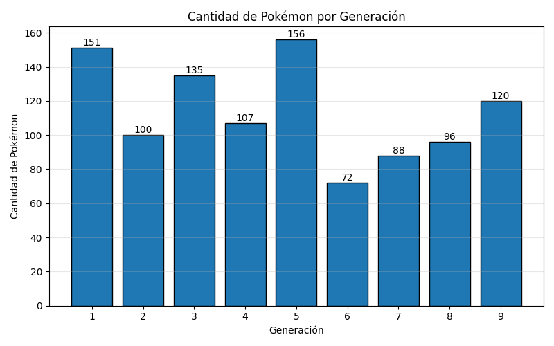
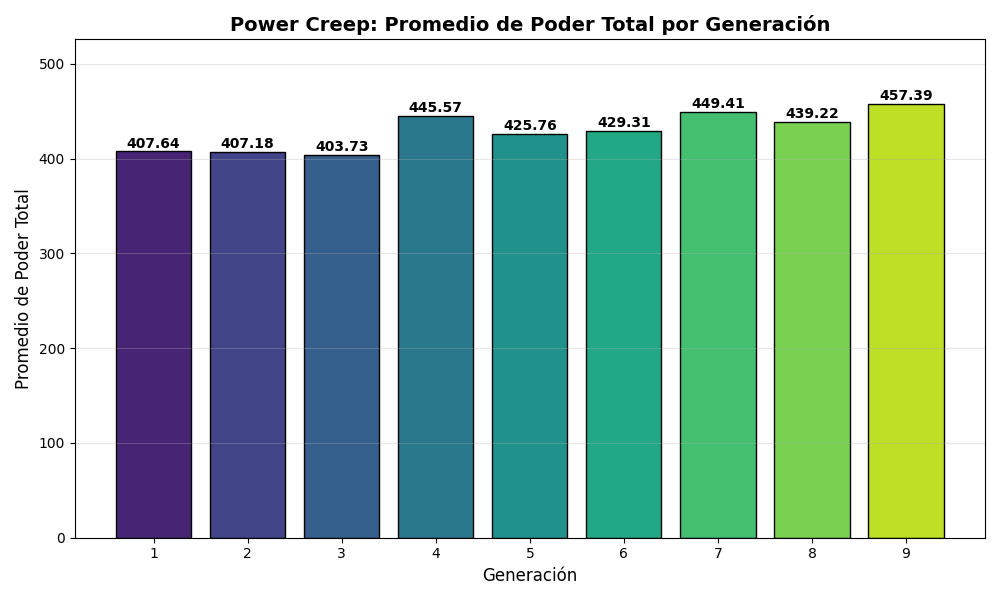

Visualizaciones
Distribución del Poder Total
Análisis de la frecuencia y concentración del poder estadístico base a lo largo de todo el dataset. Permite identificar el rango de poder predominante y detectar valores atípicos en los extremos.

Producción por Generación
Comparación del volumen de Pokémon introducidos en cada generación. Las generaciones son categorías discretas, por lo que el gráfico de barras es la representación técnicamente correcta.

Power Creep por Generación
Evolución del promedio de Poder Total a lo largo de las generaciones. Este gráfico cuantifica el fenómeno de escalada estadística sostenida conocido como power creep.

Complejidad Taxonómica
Proporción de Pokémon de tipo único frente a tipo dual, desglosada por generación. Supera al gráfico de torta al incorporar la dimensión temporal y permitir comparaciones directas.

Matriz de Combinaciones de Tipos
Mapa de calor que cruza Tipo 1 y Tipo 2 para revelar densidades y vacíos tipológicos. Es la visualización de mayor densidad informativa del trabajo, capaz de identificar patrones estructurales que ningún gráfico unidimensional podría revelar.

Conclusión Integradora
Los cinco gráficos construyen una narrativa analítica coherente: el dataset de Pokémon no es una colección arbitraria de datos, sino el reflejo de decisiones de diseño sistemáticas y evolutivas. El volumen de producción fluctúa según el contexto de cada entrega, el poder promedio crece sostenidamente confirmando el power creep, y los patrones tipológicos revelan convenciones estructurales que se repiten a lo largo de toda la franquicia. Estos hallazgos demuestran que las técnicas de Big Data, aplicadas incluso a datasets de tamaño moderado, son capaces de extraer conclusiones con valor analítico real.
Stack tecnológico